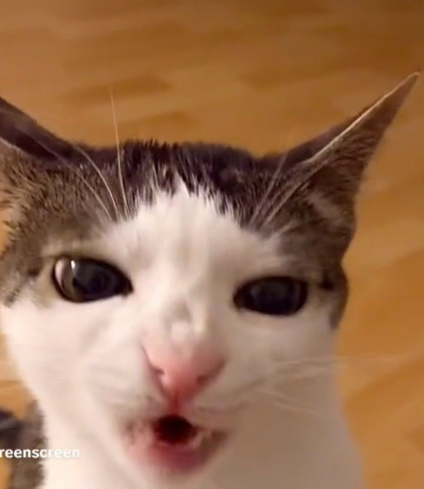
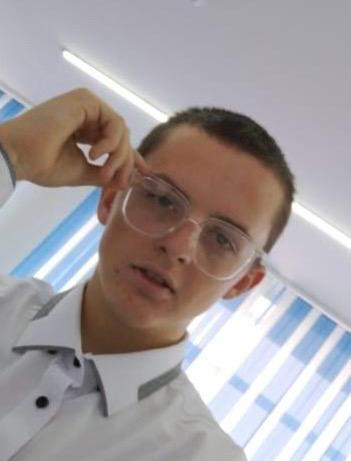
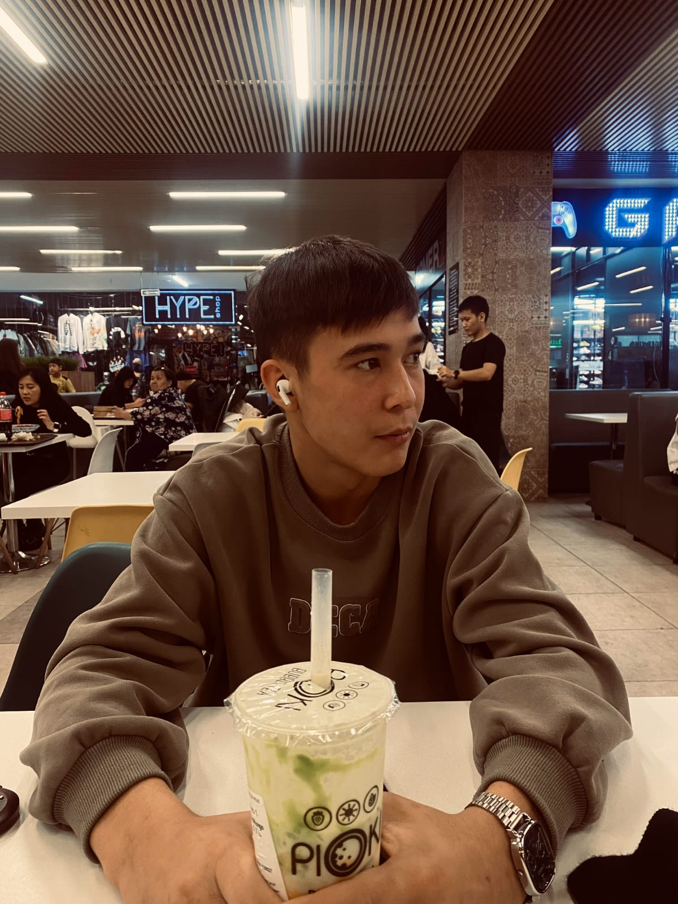
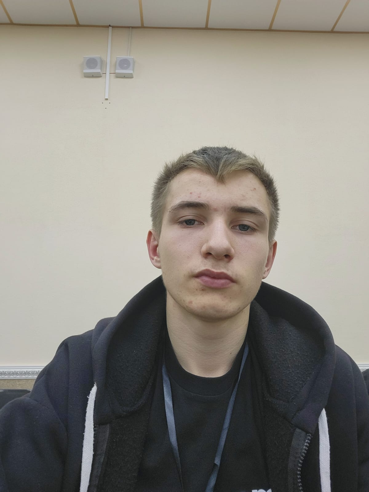
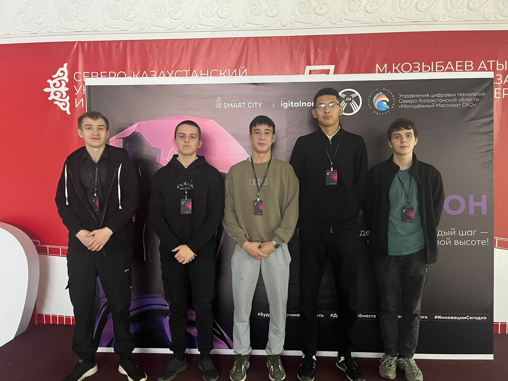

Новости из Петропавловска
Уведомления о работе и вакансиях
Здесь вы можете найти актуальные вакансии и предложения о работе в Петропавловске.
Справочник Услуг
Полезные ссылки для жителей Петропавловска:
Поликлиники Спортивные Центры Парковки Пункты Сбора МусораО нас
Мы команда энтузиастов, стремящихся сделать Петропавловск более открытым и доступным для его жителей и гостей. Наша цель — предоставить актуальную информацию о событиях, новостях и полезных ресурсах города.
Наши ценности:
- Открытость
- Доступность информации
- Поддержка местных инициатив
- Сотрудничество с горожанами
Наша команда:

mykish - Основатель и руководитель проекта

mkalixy - Разработчик веб-сайта

Сериков Адиль - Менеджер по контенту
Ботаев Диас - Специалист по PR и коммуникациям

Павел Дуров - Дизайнер и контент-менеджер
Контакты:
Вы можете связаться с нами по электронной почте: info@petropavlovsk.kz
Отзывы
Соловьев Кирилл: Отличное место для отдыха!
Визнер Артур: Понравился фестиваль, было весело!
Михель Павел: Очень интересные события, рекомендую!